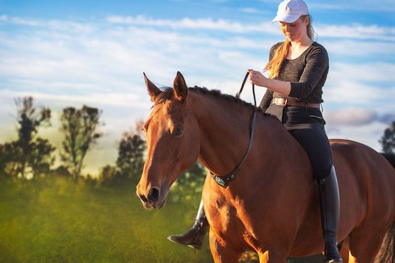

Above €10
Do you want some inspiration for your bucket list or just for something to do with someone? Here are some ideas! These range from above 10 euros up to 100 euros, it is what you make of it!
Do you want some inspiration for your bucket list or just for something to do with someone? Here are some ideas! These range from above 10 euros up to 100 euros, it is what you make of it!

Do you want to go on a holiday, but you don't know where? Try a surprise holiday! You sign yourself up and choose a date. A week before your departure, you'll find out about the weather, and a day before, you'll get the location! How fun is that!
If you want a more active adventure, try horse riding! You can hire a ranch to take you to a beach, or you can go on vacation and go horse riding there! It's really fun; you should definitely try it.

Museums are really nice places to visit. Nowadays, there are digital museums with lights and 4D works. You can often find these types of museums in Amsterdam! One of them is Nxt, and there are many more. If you don't like that, we also have traditional museums with art you can see in real life. If you are a student, you can look for a discount!